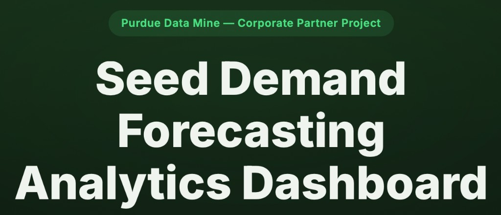
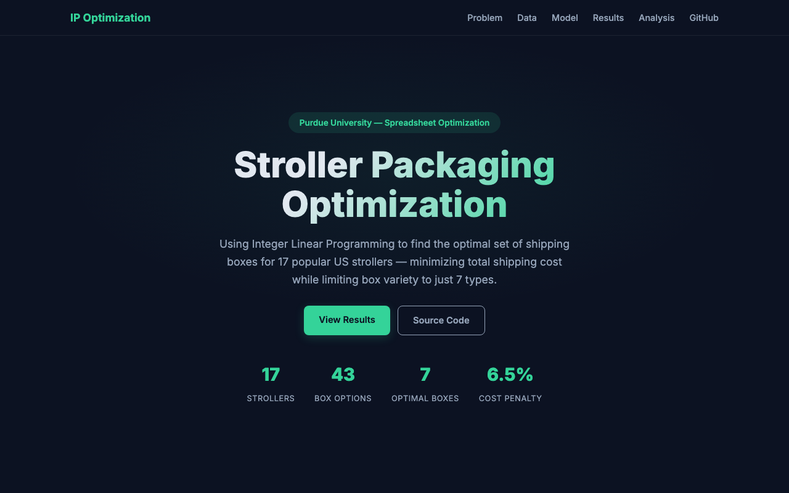

Business Analyst & Data Analyst
Analytical problem solver who connects data, business context, and strategy to design practical solutions. Experienced in experimentation, forecasting, and causal analysis across product, operations, and economic research, with a focus on turning ambiguity into structured, data-driven decisions.
I'm a graduate student at Purdue University's Daniels School of Business, pursuing a Master of Science in Business Analytics and Information Management. I graduated with distinction (GPA: 3.85) with a B.S. in the same field in December 2024.
With hands-on experience at companies like Jambo Club and Mayacrew, I specialize in turning marketing, product, and operations data into actionable recommendations. My toolkit spans experimentation design, retention analytics, interactive dashboards, and statistical modeling — always focused on quantifying impact and guiding decisions.
Through the Purdue Data Mine and partnerships with organizations like Applied Materials, I've built production-grade analytics dashboards, ensemble forecasting models, and data pipelines that drive real business outcomes.
Business Analytics & Information Management
Purdue University, Daniels School of Business
Relevant Coursework: Business Analytics, Financial Analytics, Spreadsheet Optimization, Data Mining
Business Analytics & Information Management
Purdue University, Daniels School of Business
Dean’s List: Fall 2022, Spring 2023, Fall 2023, Spring 2024 · Graduated with Distinction
Featured work from coursework, research, and industry partnerships

Built an interactive Plotly dashboard centralizing corporate KPIs, backlog metrics, and a reorder likelihood signal that flagged high-risk and high-opportunity products. Identified repeatable inventory and demand patterns at the SKU level using time-series analysis and clustering, improving sales predictability and guiding replenishment strategy.

Used Integer Linear Programming (Gurobi) to find the optimal set of 7 shipping boxes for 17 popular US strollers, minimizing dimensional shipping weight. The standardized system adds only 6.5% extra cost compared to a perfect per-product match.
Partnered with Applied Materials to analyze seasonal and macro-driven demand patterns in semiconductor equipment utilization. Developed an ensemble forecasting model combining Random Forest and XGBoost, improving utilization prediction accuracy by 13% versus the incumbent baseline. Linked utilization shifts to customer CapEx behavior and built dashboards for operations and planning leaders.
Built an XGBoost binary classifier to predict corporate bankruptcy from 64 financial attributes as part of a graduate-level ML competition. Applied winsorization for outlier handling, KNN imputation, and stratified cross-validation to achieve a 0.907 mean AUC, placing 3rd out of 53 teams.
Designed geo-split experiments and multivariate bid tests at Jambo Club, applying regression-based lift analysis to validate incrementality and reduce CPC by 27%. Built retention curves and survival analyses identifying critical churn moments, guiding features that increased retention from 22% to 53%.
Built an interactive Plotly dashboard centralizing corporate KPIs, backlog metrics, and a reorder likelihood signal flagging high-risk and high-opportunity products. Identified repeatable inventory and demand patterns at the SKU level using time-series analysis and clustering, improving sales predictability and guiding replenishment strategy.
Owned marketing performance and retention analytics across paid acquisition and in-product funnels. Designed geo-split experiments and multivariate bid tests, applying regression-based lift analysis to reduce CPC by 27% while maintaining conversion volume. Built retention curves and survival analyses that identified critical churn moments, guiding features that increased retention from 22% to 53%.
Assessed acquisition effectiveness and segment economics through funnel and cohort analyses, delivering strategic recommendations that increased digital conversion rates by 15%. Built Tableau and Excel dashboards for B2B engagement KPIs, reducing manual reporting time by 40% and shifting budget toward the highest-ROI B2B segments.
Identified seasonal and macro-driven demand patterns in semiconductor equipment utilization, linking utilization shifts to customer CapEx behavior. Developed an ensemble forecasting model combining Random Forest and XGBoost, improving utilization prediction accuracy by 13%.
Contributed to more than 500% growth in student enrollment over two years through academic consultations and trial classes. Led and mentored a team of instructors, coordinating lesson planning, sharing best practices, and monitoring instructional quality.
I'm always open to new opportunities and collaborations